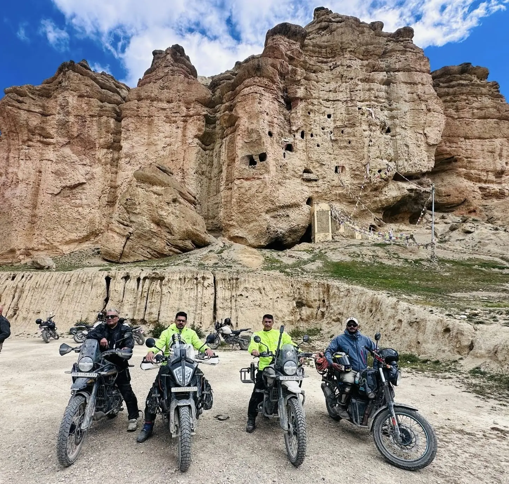
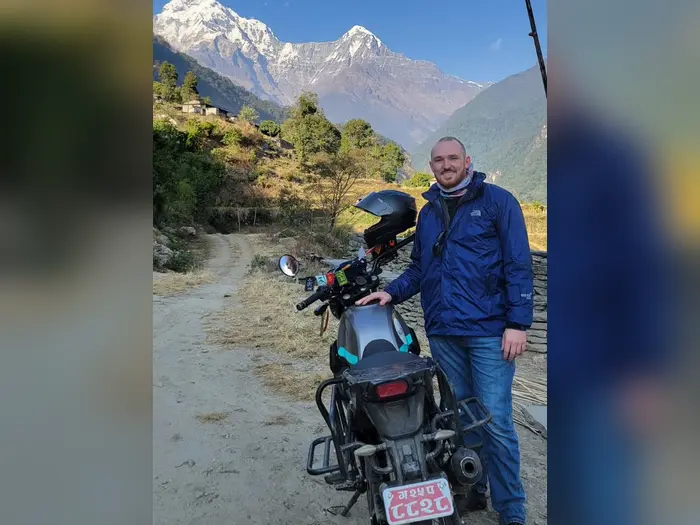

Home / Guided tours / Upper Mustang Forbidden Kingdom
7 nights / 8 days · Pokhara to Pokhara
Upper Mustang Forbidden Kingdom Expedition
Ride into the old kingdom of Lo, a restricted area north of Kagbeni where Tibetan culture, cave monasteries and red-cliff canyons have changed little in centuries. Two nights in the walled city of Lo Manthang, and Muktinath on the way back.

- Duration
- 8 days
- 7 nights
- Riding
- 575 km
- approximate
- Max altitude
- 4,000 m
- passes near Lo Manthang
Best season: March to NovemberStart and end: Pokhara
Overview
Upper Mustang sits in the rain shadow of the Himalaya, so the landscape is desert: eroded cliffs in red, ochre and grey, with green barley fields around each village. Foreigners need a Restricted Area Permit and a licensed guide to enter. The road from Kagbeni to Lo Manthang is dirt and gravel, with some sand and river crossings.
- The walled city of Lo Manthang (3,840 m) and its 15th century monasteries
- Sky caves and the Chhoser cave complex near the Tibetan border
- Red cliffs of Dhakmar and the long mani wall at Ghami
- Charang monastery and the old royal palace
- Muktinath temple and Kagbeni village
Itinerary
Day 1
Pokhara to Tatopani via Beni
- ~110 km
- 5 to 6 hrs
- 1,190 m
- Stay: Tatopani
Paved road to Beni, then the Kali Gandaki dirt road. Hot springs in the evening.
Day 2
Tatopani to Kagbeni via Marpha and Jomsom
- ~75 km
- 5 hrs
- 2,810 m
- Stay: Kagbeni
Up the gorge between Dhaulagiri and Annapurna, past Kalopani and Marpha to Jomsom and Kagbeni. Permit paperwork for Upper Mustang.
Day 3
Kagbeni to Charang via Chele, Samar and Ghami
- ~65 km
- 5 to 6 hrs
- 3,560 m
- Stay: Charang
Restricted area check post at Kagbeni, then north through Chhusang, over passes near 4,000 m, past Samar and Ghami to Charang. Visit the red monastery.
Day 4
Charang to Lo Manthang
- ~12 km
- 1 hr
- 3,840 m
- Stay: Lo Manthang
A short ride to the walled city. Afternoon walking tour of the Jampa, Thubchen and Chhoede monasteries and the royal palace.
Day 5
Side trip to Chhoser caves and Garphu
- ~30 km return
- 3 hrs
- Stay: Lo Manthang
Ride north to the Jhong cave (five-storey sky cave) and Nyiphu and Garphu monasteries, then back to Lo Manthang.
Day 6
Lo Manthang to Muktinath via Ghami and Kagbeni
- ~95 km
- 6 to 7 hrs
- 3,710 m
- Stay: Muktinath (Ranipauwa)
South past the Dhakmar red cliffs and the Ghami mani wall, down to Kagbeni and up to Muktinath. Visit the temple.
Day 7
Muktinath to Tatopani
- ~90 km
- 5 to 6 hrs
- 1,190 m
- Stay: Tatopani
Down to Jomsom and the gorge, with a last soak in the hot springs.
Day 8
Tatopani to Pokhara
- ~110 km
- 5 to 6 hrs
- 822 m
- Stay: Pokhara
Down to Beni and the paved highway back to Lakeside.
Distances and riding times are approximate. They change with road works, weather and photo stops.
What's included
Included
- Motorbike and fuel for the route
- Licensed guide (required for Upper Mustang) and riding support
- Upper Mustang Restricted Area Permit and ACAP permit
- Seven nights in lodges and teahouses (twin sharing)
- Breakfast and dinner on the road
- Backup vehicle for luggage on group tours
Not included
- Travel and medical insurance (must cover motorbike riding at altitude)
- Lunch, drinks and snacks unless your quote says otherwise
- Damage to the bike, fines and personal expenses
- Extra nights caused by weather, landslides or road closures
- Tips for the guide and support crew
Your quote confirms exactly what is included. Self-ride without a guide is possible on routes that do not need one.
Permits and good to know
Permits
Upper Mustang is a restricted area. Each foreign rider needs a Restricted Area Permit, issued only through a licensed agency with a guide, plus an ACAP permit. The government changed the permit fee in 2026, so we confirm the current fee in your quote. Send us your passport scan at least two weeks before the trip.
- Above Kagbeni the land is desert with very few fuel stops. We carry spare fuel.
- Upper Mustang is in the rain shadow, so it can be ridden in the monsoon when other routes are wet.
- Nights in Lo Manthang are cold even in autumn. Bring a warm sleeping layer.
- Days 3 and 6 are long on loose surfaces. Previous dirt riding experience is needed.
More rides from Pokhara
 12 days
12 daysHimalayan Grand Circuit – Mountain Madness
- Length
- 11 nights
- Riding
- 1,000 km
- Max alt.
- 4,000 m
Our biggest ride: Manang and the Marsyangdi valley, then Muktinath, Upper Mustang and Lo Manthang in one 12-day loop from Pokhara.
View itinerary 1 day
1 dayHimalayan Quick Escape
- Length
- Day trip
- Riding
- 120 km
- Max alt.
- 1,940 m
A full day out of Pokhara: Sarangkot sunrise, the Kaskikot and Naudanda ridge road, and lunch in the Gurung village of Ghandruk below Annapurna South.
View itinerary
2 daysHimalayan Weekend Rush
- Length
- 1 night
- Riding
- 210 km
- Max alt.
- 3,210 m
Two days, one night: ride up to Ghorepani, walk to Poon Hill for sunrise over Dhaulagiri and Annapurna, then soak in the Tatopani hot springs on the way home.
View itinerary